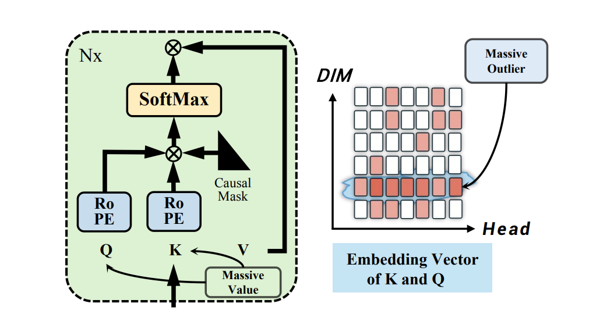
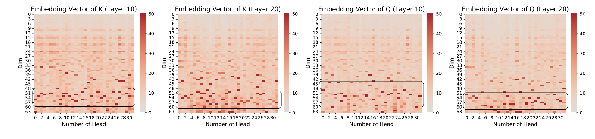

In transformer-based Large Language Models with RoPE(like Llama, Gemma), the attention queries (Q) and keys (K) exhibit concentrated massive values in certain dimensions.

We highlight three core findings from our study of massive values in LLM attention mechanisms.
We conduct extensive experiments that show that massive values in Q and K matrices play a crucial role in contextual knowledge retrieval, while having a limited effect on parametric knowledge.
We evaluate 3 quantization strategies and find that methods explicitly addressing massive values better preserve contextual understanding. This suggests the need for quantization-aware designs.
Through causal and temporal analysis, we show that massive values originate from the RoPE mechanism and appear as early as the initial layers.
✅ Judge the statement is True or False. The city of Tokyo is in Japan.
❌ Judge the statement is True or False. The city of Lodz is in the Dominican Republic.
✅ Here it is not about Refugees or Illegal immigrants. It is about whether one has documents before 1971 or not. Now, it is difficult for slum people and beggars to show valid documents, except the name in voter list. According to the comment, tell whether they present hate speech or not.
❌ Labor migrants transfer almost $10 billion a year to Ukraine. According to the comment, tell whether they present hate speech or not.
✅ A coin is heads up. Whitney flips the coin. Erika does not flip the coin. Tj does not flip the coin. Benito flips the coin. Is the coin still heads up? Note that "flip" here means "reverse". According to the flipping process above, determine if a coin remains heads up after it is either flipped or left unflipped by individuals. Therefore, the answer (Yes or No) is?
❌ A coin is heads up. Lucky does not flip the coin. Mireya flips the coin. Jj flips the coin. Kc flips the coin. Is the coin still heads up? Note that "flip" here means "reverse". According to the flipping process above, determine if a coin remains heads up after it is either flipped or left unflipped by individuals. Therefore, the answer (Yes or No) is?
To ascertain the learning difficulty of each dataset, we have utilized the LlaMA3-8B-Instruct , GPT-4o-mini , and QWen2-7B-Instruct model. Our approach involves testing each sample in the datasets as a binary classification problem via a prompting way.
The model generates a response for each sample, from which we infer a judgment, categorizing it as either "Yes" or "No". By comparing these judgments with the actual labels, we compute the accuracy for each dataset.
RQ1: Do different LLMs' Concept Depths behave consistently in the same dataset?
We categorize the performances into three types. 1) For Cities, STSA, IMDb, and Sarcasm, the LLMs suddenly understand the tasks at intermediate layers. 2) For CommonClaim and HateEval, the LLMs have already understood the tasks in shallower layers. 3) For Counterfact, StrategyQA, and Coinflip, The tasks are more difficult to understand compared with others. Therefore, we consider the tasks in type 1 and 2 easy tasks, and those in type 3 are complex.
RQ2: Do different size LLMs in the same family (e.g., the LLaMA family) have consistent Concept Depth?
We have two observations by comparing different sizes of models from the same LLM family. 1) As the number of parameters increases, peak accuracy gradually increases, and the converging point gradually advances. 2) Larger models grasp the concepts earlier and better.
RQ3: Do LLMs' Concept Depth of the same size behave consistently?
With the same number of model parameters, the models generally have a comparable understanding of the datasets.
Ablation Study: How can quantization (lower model precision) and noises (examing the robustness) affect LLM's Concept Depths?
Noises or 8-bit-quantization can cause the accuracy to converge more slowly. Compressing the LLMs to 16 bits doesn't harm the understanding process too much. The layer-wise representations of LLMs are susceptible to noise and high-ratio quantization. Therefore, it is crucial to proceed cautiously when conducting high-ratio quantization inference.
@article{jin2025massive,
title={Massive Values in Self-Attention Modules are the Key to Contextual Knowledge Understanding},
author={Jin, Mingyu and Mei, Kai and Xu, Wujiang and Sun, Mingjie and Tang, Ruixiang and Du, Mengnan and Liu, Zirui and Zhang, Yongfeng},
journal={arXiv preprint arXiv:2502.01563},
year={2025}
}